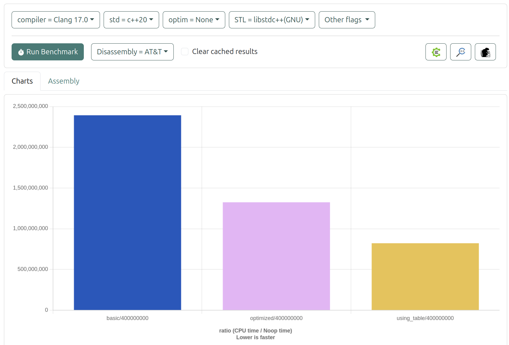
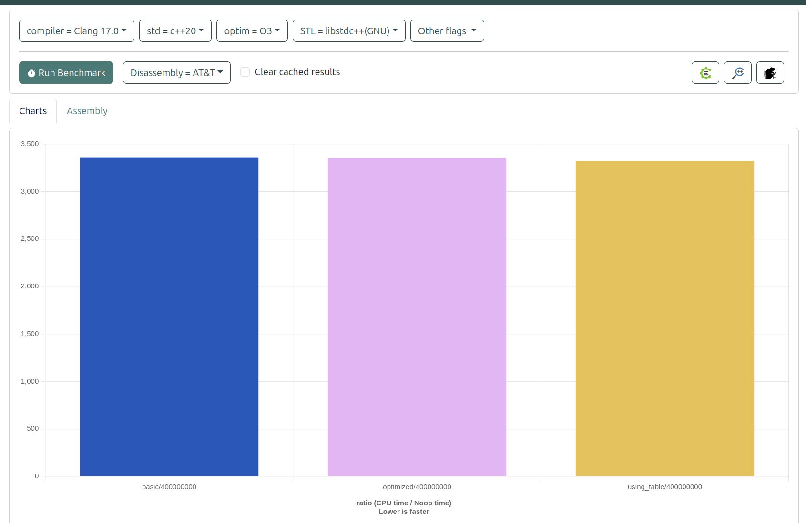

時間轉換程式分析報告
一、程式目的
本程式主要用於解決以下問題：
- 輸入兩個 HHMMSS 格式的時間（例如 091832 表示 09:18:32）
- 將這些時間轉換為秒數
- 計算兩個時間之間的差異（以秒為單位）
二、整數乘法與除法效能測試
#include <iostream>
#include <chrono>
// 整數 (int64_t) 乘除法函數
int64_t mulInt(int64_t a) {
return static_cast<int64_t>(a * 0.01); // 整數乘法，結果為整數
}
int64_t divInt(int64_t a) {
return a / 100; // 整數除法，結果為整數
}
// 無符號整數 (uint64_t) 乘除法函數
uint64_t mulUInt(uint64_t a) {
return static_cast<uint64_t>(a * 0.01); // 無符號整數乘法，結果為無符號整數
}
uint64_t divUInt(uint64_t a) {
return a / 100; // 無符號整數除法，結果為無符號整數
}
// 位移測試函數
int64_t shiftInt(int64_t a) {
return a << 1; // 左位移
}
int64_t shiftUInt(uint64_t a) {
return a << 1; // 左位移
}
// 性能測試函數
int64_t testMathCalc() {
const auto total_iterations = 10000 * 10000;
// 計算整數乘法運行時間
auto start_sys_time = std::chrono::system_clock::now();
int64_t value = 0;
for (auto i = 0; i < total_iterations; ++i) {
value = mulInt(i + 5 + value);
}
auto elapsedSysTime = std::chrono::system_clock::now() - start_sys_time;
auto lossTime = std::chrono::duration_cast<std::chrono::microseconds>(elapsedSysTime).count();
std::cout << "mulInt (int64) lossTime: " << lossTime << " us." << std::endl;
// 計算整數除法運行時間
start_sys_time = std::chrono::system_clock::now();
for (auto i = 0; i < total_iterations; ++i) {
value = divInt(i + 5 + value);
}
elapsedSysTime = std::chrono::system_clock::now() - start_sys_time;
lossTime = std::chrono::duration_cast<std::chrono::microseconds>(elapsedSysTime).count();
std::cout << "divInt (int64) lossTime: " << lossTime << " us." << std::endl;
// 計算無符號整數乘法運行時間
uint64_t uValue = 0;
start_sys_time = std::chrono::system_clock::now();
for (auto i = 0; i < total_iterations; ++i) {
uValue = mulUInt(i + 5 + uValue);
}
elapsedSysTime = std::chrono::system_clock::now() - start_sys_time;
lossTime = std::chrono::duration_cast<std::chrono::microseconds>(elapsedSysTime).count();
std::cout << "mulUInt (uint64) lossTime: " << lossTime << " us." << std::endl;
// 計算無符號整數除法運行時間
start_sys_time = std::chrono::system_clock::now();
for (auto i = 0; i < total_iterations; ++i) {
uValue = divUInt(i + 5 + uValue);
}
elapsedSysTime = std::chrono::system_clock::now() - start_sys_time;
lossTime = std::chrono::duration_cast<std::chrono::microseconds>(elapsedSysTime).count();
std::cout << "divUInt (uint64) lossTime: " << lossTime << " us." << std::endl;
// 計算整數左位移運行時間
start_sys_time = std::chrono::system_clock::now();
for (auto i = 0; i < total_iterations; ++i) {
value = shiftInt(i + 5 + value);
}
elapsedSysTime = std::chrono::system_clock::now() - start_sys_time;
lossTime = std::chrono::duration_cast<std::chrono::microseconds>(elapsedSysTime).count();
std::cout << "shiftInt (int64) lossTime: " << lossTime << " us." << std::endl;
// 計算無符號整數左位移運行時間
start_sys_time = std::chrono::system_clock::now();
for (auto i = 0; i < total_iterations; ++i) {
uValue = shiftUInt(i + 5 + uValue);
}
elapsedSysTime = std::chrono::system_clock::now() - start_sys_time;
lossTime = std::chrono::duration_cast<std::chrono::microseconds>(elapsedSysTime).count();
std::cout << "shiftUInt (uint64) lossTime: " << lossTime << " us." << std::endl;
return value + uValue;
}
int main(int argc, char* argv[]) {
testMathCalc();
return 0;
}
這裡整理了一個表格來比較使用 g++ -O0 和 g++ -O3 的未優化和優化版本下的運算性能。這樣的對比能清楚顯示各種運算的時間損耗及其變化。
性能測試結果
| 運算類型 | -O0 時間損耗 (us) | -O3 時間損耗 (us) |
|---|---|---|
整數乘法 (mulInt) | 394511 | 315831 |
整數除法 (divInt) | 145692 | 145684 |
無符號整數乘法 (mulUInt) | 309761 | 313527 |
無符號整數除法 (divUInt) | 127548 | 127633 |
整數左位移 (shiftInt) | 73694 | 36464 |
無符號整數左位移 (shiftUInt) | 72389 | 36521 |
註解
- -O0: 未進行任何優化的編譯版本。
- -O3: 進行高級別優化的編譯版本。
- 左位移運算: 在兩種編譯版本中，位移操作的性能均為最佳。
- 乘法和除法性能: 在乘法和除法運算中，無符號整數的性能略低於有符號整數，但整體來說，有符號整數的表現相對較好。
這個表格清晰地展示了不同編譯優化選項下的性能變化，特別是左位移操作在兩種模式下的優勢。
二、實作方法
程式提供了三種不同的實作方法來解決此問題：
1. 基本版本 (Basic Conversion)
unsigned int convert_time_to_seconds_basic(unsigned int time_in_hhmmss)
{
unsigned int hours = time_in_hhmmss / TIME_HOUR_DIVISOR;
unsigned int minutes = (time_in_hhmmss / TIME_MINUTE_DIVISOR) % 100;
unsigned int seconds = time_in_hhmmss % 100;
return (hours * SECONDS_PER_HOUR) + (minutes * SECONDS_PER_MINUTE) + seconds;
}
- 使用基本的數學運算
- 透過除法和取餘數來分離時、分、秒
- 計算方式直觀易懂
- 需要多次除法運算，效能較差
2. 優化版本 (Optimized Conversion)
unsigned int convert_time_to_seconds_optimized(unsigned int time_in_hhmmss)
{
unsigned int hour = ((uint64_t)time_in_hhmmss * HOUR_RECIPROCAL) >> 32;
unsigned int remaining_time = time_in_hhmmss - hour * TIME_HOUR_DIVISOR;
unsigned int minute = ((uint64_t)remaining_time * MINUTE_RECIPROCAL) >> 32;
return time_in_hhmmss - (6400 * hour) - (40 * minute);
}
特點：
- 使用位移運算代替除法
- 採用預先計算的倒數來優化運算
- 透過減法而非乘法來計算最終結果
- HOUR_RECIPROCAL (429496U) 和 MINUTE_RECIPROCAL (42949672U) 是經過特殊計算的常數
3. 查表法版本 (Lookup Table)
unsigned int convert_time_to_seconds_using_table(unsigned int time_in_hhmmss)
{
return time_seconds[time_in_hhmmss];
}
特點：
- 使用預先計算好的查找表
- 直接透過索引取得結果
- 犧牲記憶體空間換取執行速度
- 表格中使用 -1 標記無效的時間值
三、效能比較
程式使用了以下參數進行測試：
- 測試次數：400,000,000 次
- 測試數值：91832 (09:18:32) 和 154957 (15:49:57)
效能比較（執行時間由慢到快）：
- 基本版本：需要多次除法運算，效能最差
- 優化版本：使用位移運算和特殊常數，效能提升明顯
- 查表法：直接查表獲得結果，效能最佳
- 使用Clang -O0 比較三者效能排序為：查表法 > 優化版本 > 基本版本

- 使用Clang -O3 比較三者效能排序為： 查表法 > 優化版本 > 基本版本 但沒有未優化明顯

- GCC -O3 編譯器優化下，各版本在 400,000,000 次迭代中的執行時間，查表法 > 優化版本 > 基本版本
| 版本 | 執行時間 (秒) | 編譯器優化等級 | 測試迭代次數 |
|---|---|---|---|
| 基本版本 | 1.030993 | gcc -O3 | 400,000,000 |
| 優化版本 | 0.587336 | gcc -O3 | 400,000,000 |
| 查表法 | 0.216822 | gcc -O3 | 400,000,000 |
數據分析
- 所有轉換函數均在
gcc -O3優化級別下執行。 - 測試的迭代次數均為 400,000,000，保證了性能比較的公平性。
這樣的整理應該可以讓您更清晰地展示執行時間的差異。如果您需要進一步的圖形化或其他資訊，隨時告訴我！
四、記憶體使用分析
各版本的記憶體使用特性：
- 基本版本：只需要少量的變數空間
- 優化版本：需要額外儲存預先計算的常數
- 查表法：需要大量記憶體存放查找表
五、使用建議
- 如果記憶體空間充足，建議使用查表法，可獲得最佳效能
- 如果記憶體受限但仍需要較好的效能，可使用優化版本
- 基本版本適合用於教學或需要程式碼易讀性的場合
六、測試工具：
- GCC：使用 GCC 編譯器進行編譯與優化測試。
- objdump：可用於檢查編譯後的二進位檔，幫助進行性能分析和優化。
- Quick-Bench：在線性能測試平臺，便於快速比較不同程式片段的效能。
- https://quick-bench.com/
- Godbolt Compiler Explorer：提供多種編譯器的即時代碼檢查和性能測試，便於分析和學習不同編譯器的行為。
- https://gcc.godbolt.org